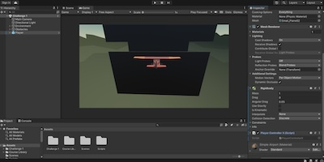

Projects
Unity Game

While studying the process of 3D game production using open-source 3D objects, I developed a simple game featuring a car and a plane. The gameplay involves navigating the car through obstacles and steering the plane around barriers.
Playlist
I practiced dynamic memory allocation by creating a hypothetical playlist application. This application allows users to dynamically add or remove songs from their playlist, ensuring efficient memory usage and real-time updates to the playlist's content. This exercise helped me understand the complexities of memory management and how to implement flexible data structures in programming.
Stack
This project provided an excellent opportunity to delve into the complexities of data structures. I implemented a stack to determine if a given word or phrase is a palindrome, leveraging the stack's LIFO (last in, first out) properties for efficient comparison. Additionally, I designed a comprehensive menu function that allows users to interactively test the stack's functionality.